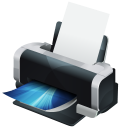

Services
Save on your ink and toner needs for home or business, we offer both manufactured and refills on most brand names and we undercut all the big box stores with our pricing.
We invite and encourage customers to ask our knowledgeable staff any questions about inks, toners and cartridges. We can also offer excellent advice when it comes to purchasing a new printer, finding one that will suite your needs!
What we do and offer
- Refills
- Bring in your empty ink cartridges and have them filled on the spot (Please note that not every ink cartridge can be refilled)
- Compatibles
- We offer a number of recycled/remanufactured ready to use toner and ink products that compare to the quality of brand new.
- OEM/New
- We have a verity of brand new name brand ink and toner cartridges with prices under cutting big box stores.